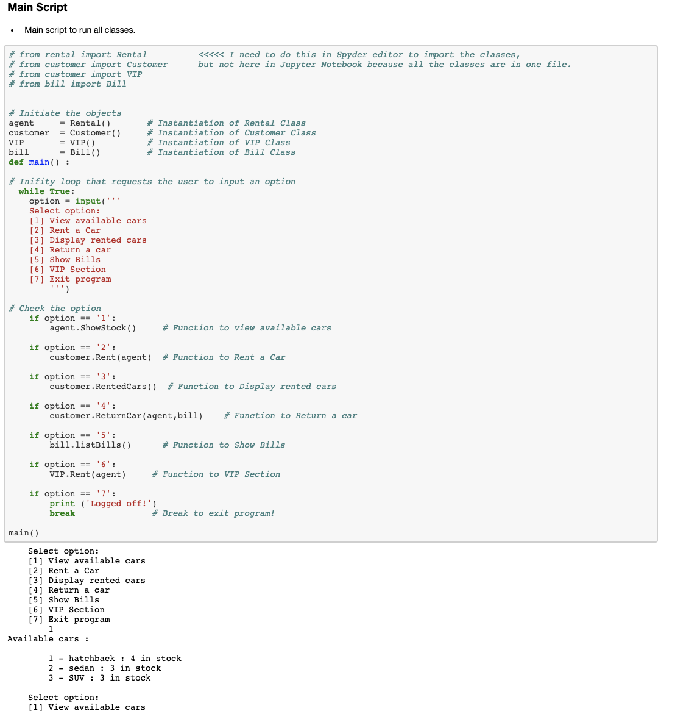
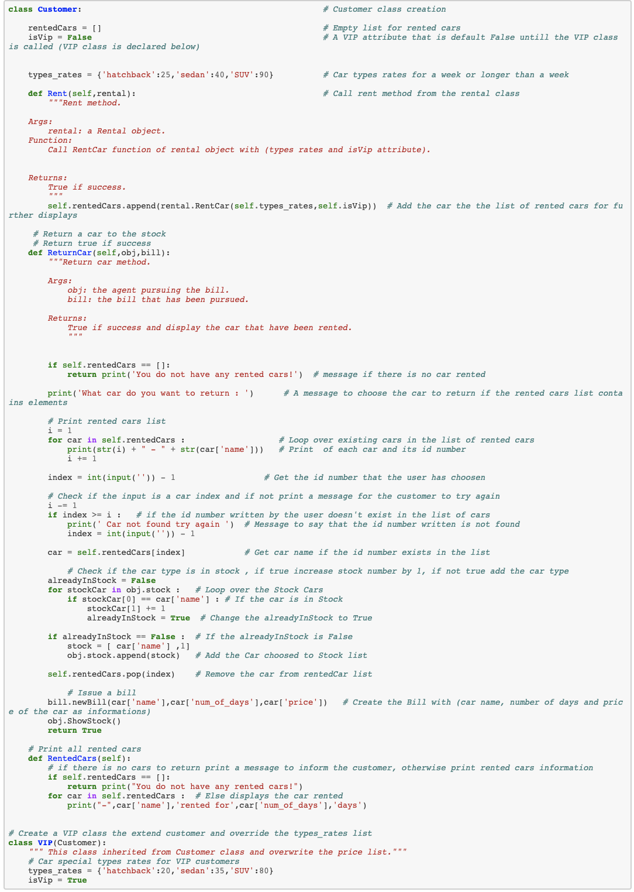
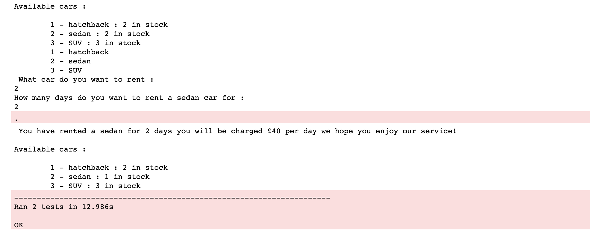
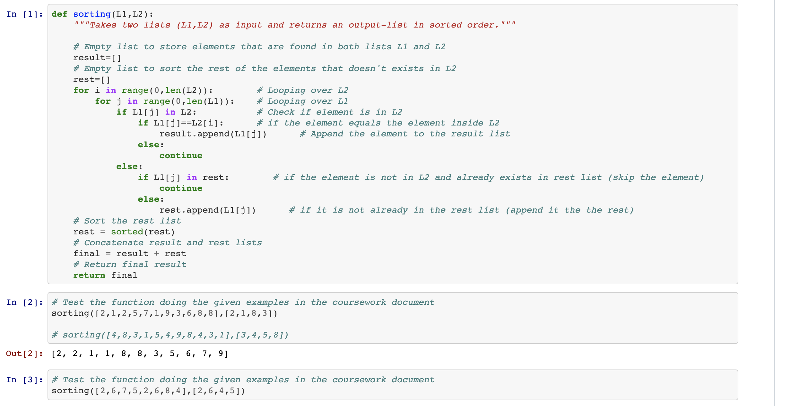

Software Development: Programming and Algorithms (SDPA) Coursework
The coursework of this unit consists of three main parts: (note: GitHub Repo is private)
1- Software Development
In this part, I built a car rental system that allows customers to interact with it including checking available cars in the stock as well enabling the user to rent a car and return it to issue a bill. I instantiated three classes:
- - Customer Class: contains four methods (Rent, ReturnCar, RentedCars, VIP) and it is responsible for managing user actions. It is integrated to work with Rental and Bill classes.
- - Rental Class contains three methods (init(self), ShowStock, RentCar) and its main responsibility is to update cars status in the inventory and calculate the price of the rent.
- - Bill Class contains two methods (newBill, listBills) and its main responsibility is to issue a bill for customers after they return a car.
View Snippets of The Source Code Below:



2- Algorithm Analysis
In this part, I wrote a function that takes two lists and produces an output list where the first list (L1) sorted according to the ordering of the elements sequence in the second list (L2). Other elements in the first list (L1) that is not present in the second list (L2), will be inserted at the end of the output-list in sorted order.
View Source Code:

3- Data Analytics
In this part, the data source was Twitter. I collected Premier League (PL) related tweets using tweepy
built-in library in Python and saved them into a CSV file.
I then did a comprehensive exploratory data analysis on this dataset. The variables of interests were
['user', 'text', 'date', 'followers_count', 'retweet_count', 'favorite_count', 'location', 'source',
'tweet_hour'].
I did the following steps:
- - Setting up the virtual environment.
- - Collecting the dataset from Twitter.
- - Data preparation & cleaning
- - Exploratory Data Analysis (EDA) with questions to answer
- - Summary of the findings
View Analysis Findings:
View Snippets of The Source Code Below: